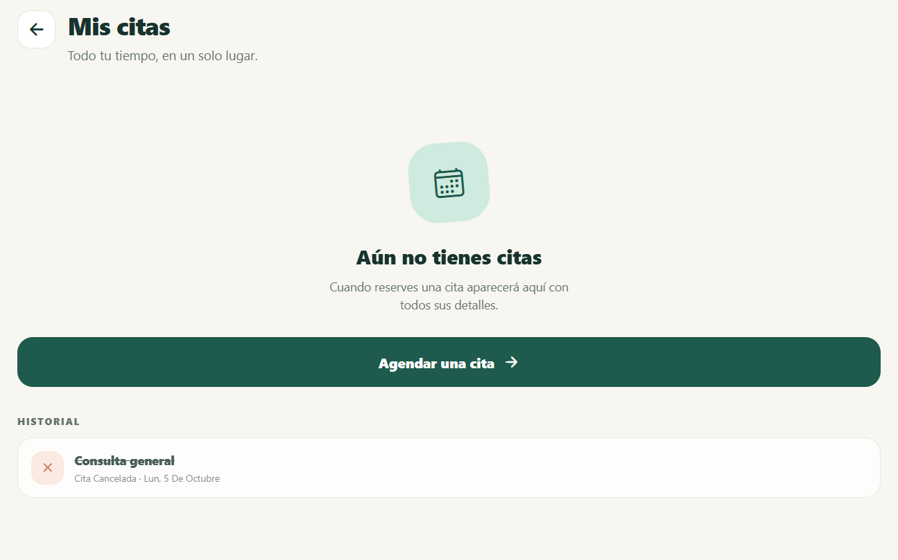

01
Reservar y cancelar una cita
APROBADO · 37 SDado que Alex abre una agenda limpia
Cuando elige servicio, profesional, día y hora
Y confirma la reserva
Entonces la cita aparece en “Mis citas”
Cuando cancela la cita
Entonces aparece en el historial
Cuando elige servicio, profesional, día y hora
Y confirma la reserva
Entonces la cita aparece en “Mis citas”
Cuando cancela la cita
Entonces aparece en el historial
